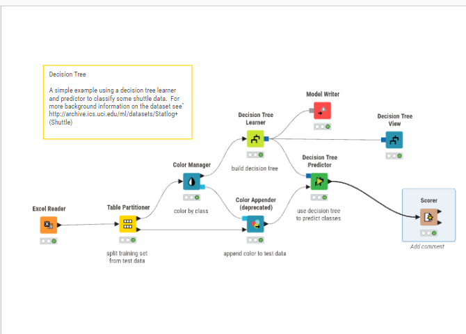
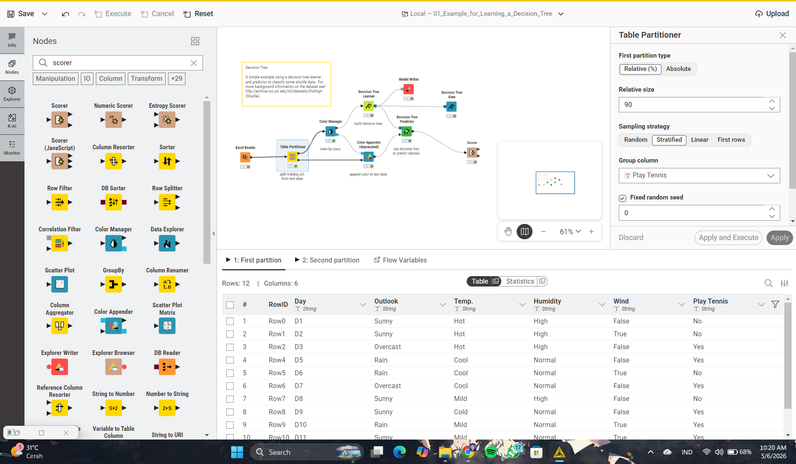
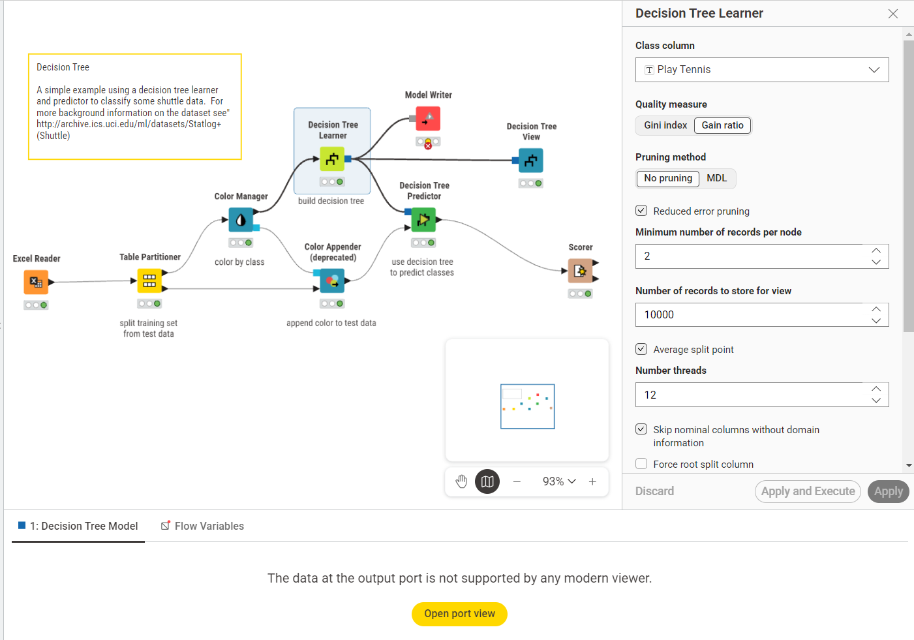
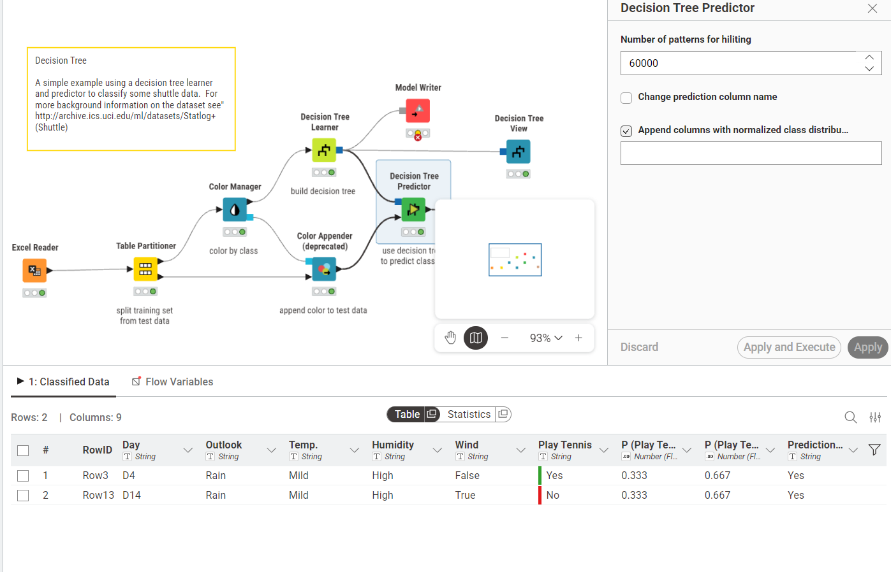
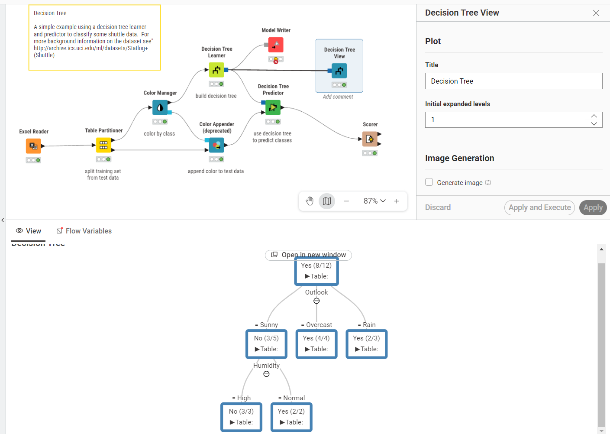
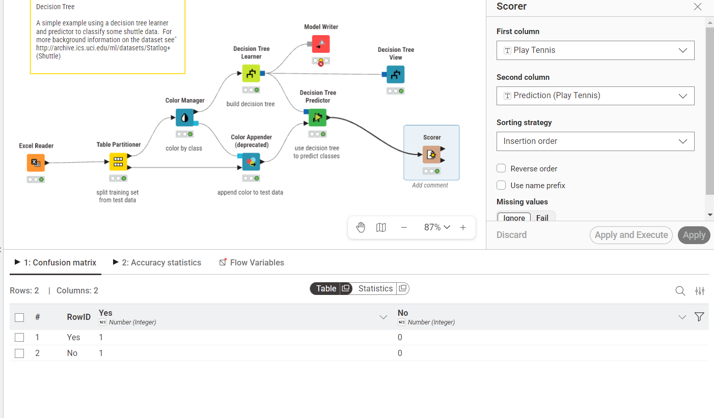

🌳 Decision Tree dengan KNIME Analytics Platform#
Daftar Isi#
Apa itu Decision Tree?
Konsep Dasar Decision Tree
Dataset: Play Tennis
Alur Kerja (Workflow) di KNIME
Konfigurasi Setiap Node
Hasil dan Interpretasi
Kesimpulan
1. Apa itu Decision Tree?#
Decision Tree (Pohon Keputusan) adalah salah satu algoritma machine learning yang paling populer dan mudah dipahami. Algoritma ini bekerja seperti cara manusia membuat keputusan — dengan mengajukan serangkaian pertanyaan secara berurutan hingga sampai pada kesimpulan akhir.
Apakah cuaca Cerah?
├── Ya → Apakah Kelembaban Tinggi?
│ ├── Ya → ❌ Jangan Main Tennis
│ └── Tidak → ✅ Main Tennis
├── Mendung → ✅ Main Tennis
└── Hujan → Apakah Angin Kencang?
├── Ya → ❌ Jangan Main Tennis
└── Tidak → ✅ Main Tennis
Mengapa Decision Tree?#
Keunggulan |
Kekurangan |
|---|---|
Mudah dipahami & divisualisasikan |
Rentan terhadap overfitting |
Tidak perlu normalisasi data |
Tidak stabil (sensitif terhadap data) |
Dapat menangani data kategorik & numerik |
Kurang optimal untuk data linear |
Proses interpretasi yang transparan |
Bias jika ada ketidakseimbangan kelas |
2. Konsep Dasar Decision Tree#
2.1 Komponen Utama#
[ROOT NODE]
Outlook?
/ | \
Sunny Overcast Rain
/ | \
[Internal] [Leaf] [Internal]
Humidity? ✅ Yes Wind?
/ \ / \
High Normal Strong Weak
/ \ / \
[Leaf] [Leaf] [Leaf] [Leaf]
❌ No ✅ Yes ❌ No ✅ Yes
Root Node → Node paling atas, fitur pertama yang digunakan untuk memisahkan data
Internal Node → Simpul tengah yang masih memiliki cabang
Leaf Node → Simpul akhir berisi hasil prediksi/kelas
Branch/Edge → Hubungan antar node berdasarkan kondisi tertentu
2.2 Gain Ratio (Ukuran Kualitas Split)#
KNIME menggunakan Gain Ratio sebagai ukuran kualitas pemisahan data. Gain Ratio adalah pengembangan dari Information Gain yang mengatasi bias terhadap atribut dengan banyak nilai.
Information Gain:
Entropy:
Gain Ratio:
Semakin tinggi Gain Ratio, semakin baik atribut tersebut digunakan sebagai pemisah data.
2.3 Pruning (Pemangkasan)#
Pruning adalah teknik untuk mencegah overfitting dengan memotong cabang pohon yang tidak signifikan.
No Pruning → Pohon tumbuh penuh tanpa dipangkas
MDL (Minimum Description Length) → Memangkas berdasarkan kompleksitas model
Reduced Error Pruning → Memangkas cabang yang tidak meningkatkan akurasi pada data validasi
3. Dataset: Play Tennis#
Dataset Play Tennis adalah dataset klasik dalam machine learning yang digunakan untuk memutuskan apakah seseorang akan bermain tenis berdasarkan kondisi cuaca.
Struktur Dataset#
Kolom |
Tipe |
Deskripsi |
|---|---|---|
|
String |
Identifikasi baris (D1–D14) |
|
String |
Hari pengamatan |
|
String |
Kondisi langit: Sunny, Overcast, Rain |
|
String |
Suhu: Hot, Mild, Cool |
|
String |
Kelembaban: High, Normal |
|
String |
Angin: True (kencang), False (lemah) |
|
String |
Target/Label: Yes / No |
Contoh Data#
# |
Day |
Outlook |
Temp. |
Humidity |
Wind |
Play Tennis |
|---|---|---|---|---|---|---|
1 |
D1 |
Sunny |
Hot |
High |
False |
No |
2 |
D2 |
Sunny |
Hot |
High |
True |
No |
3 |
D3 |
Overcast |
Hot |
High |
False |
Yes |
4 |
D4 |
Rain |
Mild |
High |
False |
Yes |
5 |
D5 |
Rain |
Cool |
Normal |
False |
Yes |
6 |
D6 |
Rain |
Cool |
Normal |
True |
No |
7 |
D7 |
Overcast |
Cool |
Normal |
True |
Yes |
8 |
D8 |
Sunny |
Mild |
High |
False |
No |
9 |
D9 |
Sunny |
Cool |
Normal |
False |
Yes |
10 |
D10 |
Rain |
Mild |
Normal |
False |
Yes |
11 |
D11 |
Sunny |
Mild |
Normal |
True |
Yes |
12 |
D12 |
Overcast |
Mild |
High |
True |
Yes |
13 |
D13 |
Overcast |
Hot |
Normal |
False |
Yes |
14 |
D14 |
Rain |
Mild |
High |
True |
No |
Total: 14 baris | Yes: 9 | No: 5
4. Alur Kerja (Workflow) di KNIME#
Berikut adalah tampilan keseluruhan workflow Decision Tree di KNIME:

Gambar 0: Keseluruhan workflow Decision Tree di KNIME — mulai dari Excel Reader hingga Scorer.
Penjelasan Alur#
┌─────────────┐ ┌──────────────────┐ ┌───────────────┐
│ Excel Reader │───▶│ Table Partitioner│───▶│ Color Manager │
└─────────────┘ └──────────────────┘ └───────┬───────┘
│ │
(Training 90%) (color by class)
│ │
┌────────▼────────┐ ┌────────▼───────────┐
│Decision Tree │ │ Color Appender │
│Learner │ │ (deprecated) │
└────────┬────────┘ └────────┬───────────┘
│ │
┌─────────────┼──────────────────────┘
│ │
┌─────────▼────┐ ┌────▼──────────────┐
│ Model Writer │ │Decision Tree │
└─────────────┘ │Predictor │
└─────────┬──────────┘
│
┌────────────────┼──────────────────┐
│ │
┌─────────▼──────┐ ┌─────────────▼──┐
│Decision Tree │ │ Scorer │
│View │ └────────────────┘
└────────────────┘
Penjelasan Setiap Node#
Node |
Fungsi |
|---|---|
Excel Reader |
Membaca dataset Play Tennis dari file Excel |
Table Partitioner |
Membagi data menjadi training set & test set |
Color Manager |
Memberi warna pada kelas untuk visualisasi |
Decision Tree Learner |
Melatih model Decision Tree dari training data |
Model Writer |
Menyimpan model yang telah dilatih |
Color Appender |
Menambahkan warna ke test data |
Decision Tree Predictor |
Melakukan prediksi pada test data |
Decision Tree View |
Menampilkan visualisasi pohon keputusan |
Scorer |
Mengevaluasi akurasi model (confusion matrix) |
5. Konfigurasi Setiap Node#
5.1 Excel Reader#
Node ini membaca file Excel yang berisi dataset Play Tennis (14 baris, 7 kolom). Output-nya adalah tabel dengan kolom: RowID, Day, Outlook, Temp., Humidity, Wind, dan Play Tennis.
5.2 Table Partitioner#
Node ini membagi dataset menjadi dua bagian: training set dan test set.

Gambar 1: Panel konfigurasi Table Partitioner (kanan) dan preview dataset Play Tennis (bawah). Terlihat 12 baris data training hasil partisi 90%.
Konfigurasi:
First partition type : Relative (%)
Relative size : 90%
Sampling strategy : Stratified
Group column : Play Tennis
Fixed random seed : 0
Penjelasan Parameter:
Parameter |
Nilai |
Penjelasan |
|---|---|---|
|
90% |
90% data (≈12 baris) untuk training, 10% (≈2 baris) untuk testing |
|
Stratified |
Memastikan proporsi kelas (Yes/No) terjaga di kedua partisi |
|
Play Tennis |
Kolom target yang dijaga distribusinya |
|
0 |
Memastikan hasil pembagian selalu konsisten/reproducible |
Catatan: Dengan 14 data dan 90% split, diperoleh 12 data training dan 2 data testing.
5.3 Decision Tree Learner#
Node inti untuk membangun model Decision Tree dari data training.

Gambar 2: Panel konfigurasi Decision Tree Learner. Class column diset ke “Play Tennis” dengan Quality measure menggunakan Gain Ratio.
Konfigurasi:
Class column : Play Tennis
Quality measure : Gain ratio
Pruning method : No pruning
Reduced error pruning : ✅ Enabled
Min. records per node : 2
Records to store for view : 10000
Average split point : ✅ Enabled
Number of threads : 12
Skip nominal columns : ✅ Enabled
Force root split column : ❌ Disabled
Penjelasan Parameter Penting:
Parameter |
Nilai |
Penjelasan |
|---|---|---|
|
Play Tennis |
Kolom yang ingin diprediksi (target label) |
|
Gain ratio |
Kriteria pemilihan fitur terbaik untuk split |
|
No pruning |
Pohon tumbuh tanpa dipangkas secara eksplisit |
|
✅ |
Memangkas cabang yang tidak meningkatkan akurasi |
|
2 |
Sebuah node minimal memiliki 2 data agar bisa dipecah |
|
✅ |
Menggunakan rata-rata sebagai titik split untuk data numerik |
5.4 Decision Tree Predictor#
Node ini menggunakan model yang telah dilatih untuk melakukan prediksi pada test data (2 baris).

Gambar 3: Konfigurasi Decision Tree Predictor (kanan) dan output Classified Data (bawah) berisi 2 baris test data beserta kolom probabilitas dan hasil prediksi.
Konfigurasi:
Number of patterns for hiliting : 60000
Change prediction column name : ❌ Disabled
Append columns with normalized : ✅ Enabled
class distribution
Output Classified Data:
# |
RowID |
Day |
Outlook |
Temp. |
Humidity |
Wind |
Play Tennis |
P(Yes) |
P(No) |
Prediction |
|---|---|---|---|---|---|---|---|---|---|---|
1 |
Row3 |
D4 |
Rain |
Mild |
High |
False |
Yes |
0.333 |
0.667 |
Yes |
2 |
Row13 |
D14 |
Rain |
Mild |
High |
True |
No |
0.333 |
0.667 |
Yes |
Perhatian: Row 2 (D14) diprediksi “Yes” padahal label aslinya “No” → ini adalah misclassification.
Kolom tambahan yang dihasilkan:
P (Play Tennis = Yes)→ Probabilitas kelas “Yes”P (Play Tennis = No)→ Probabilitas kelas “No”Prediction (Play Tennis)→ Hasil prediksi akhir
5.5 Decision Tree View#
Node ini menampilkan visualisasi pohon keputusan yang telah dilatih.

Gambar 4: Tampilan pohon keputusan yang dihasilkan. Root node menggunakan fitur “Outlook”, diikuti “Humidity” untuk cabang Sunny.
Konfigurasi:
Title : Decision Tree
Initial expanded levels: 1
Generate image : ❌ Disabled
Visualisasi Pohon Keputusan:
Yes (8/12)
[ROOT NODE]
|
Outlook
⊖ (split)
/ | \
= Sunny = Overcast = Rain
No (3/5) Yes (4/4) Yes (2/3)
|
Humidity
⊖ (split)
/ \
= High = Normal
No (3/3) Yes (2/2)
Interpretasi Pohon:
Node |
Arti |
|---|---|
|
Dari 12 training data, prediksi default adalah “Yes” (8 dari 12 berlabel Yes) |
|
Jika cuaca mendung → selalu Yes (4/4 data) |
|
Jika cerah & kelembaban tinggi → No (3/3) |
|
Jika cerah & kelembaban normal → Yes (2/2) |
|
Jika hujan → cenderung Yes (2/3 data) |
5.6 Scorer#
Node ini mengevaluasi performa model dengan membandingkan label asli vs prediksi.

Gambar 5: Konfigurasi Scorer (kanan) dan output Confusion Matrix (bawah) membandingkan kolom “Play Tennis” (aktual) dengan “Prediction (Play Tennis)” (prediksi).
Konfigurasi:
First column : Play Tennis (label asli)
Second column : Prediction (Play Tennis) (label prediksi)
Sorting strategy : Insertion order
Missing values : Ignore
Confusion Matrix:
Predicted: Yes |
Predicted: No |
|
|---|---|---|
Actual: Yes |
1 ✅ (True Positive) |
0 |
Actual: No |
1 ❌ (False Positive) |
0 |
Metrik Evaluasi:
Metrik |
Nilai |
Rumus |
|---|---|---|
Accuracy |
50% |
(TP + TN) / Total = 1/2 |
Precision |
50% |
TP / (TP + FP) = 1/2 |
Recall |
100% |
TP / (TP + FN) = 1/1 |
Catatan: Akurasi rendah (50%) karena test set hanya terdiri dari 2 data saja — jumlah yang sangat kecil untuk evaluasi yang andal. Dengan lebih banyak data uji, evaluasi akan lebih representatif.
6. Hasil dan Interpretasi#
6.1 Aturan Keputusan yang Dihasilkan#
Dari pohon keputusan yang terbentuk, dapat dirumuskan aturan (rules) berikut:
IF Outlook = Overcast
THEN Play Tennis = Yes
IF Outlook = Sunny AND Humidity = High
THEN Play Tennis = No
IF Outlook = Sunny AND Humidity = Normal
THEN Play Tennis = Yes
IF Outlook = Rain
THEN Play Tennis = Yes (mayoritas, 2/3 kasus)
6.2 Fitur Terpenting#
Berdasarkan pohon yang terbentuk, Outlook adalah fitur paling penting karena menjadi root node — artinya Outlook memiliki Gain Ratio tertinggi di antara semua fitur.
Peringkat |
Fitur |
Peran dalam Pohon |
|---|---|---|
1 |
Outlook |
Root node (split pertama) |
2 |
Humidity |
Internal node di cabang Sunny |
3 |
Temp., Wind |
Tidak digunakan (kurang informatif) |
6.3 Performa Model#
Test Data : 2 baris (D4 dan D14)
Benar : 1 (D4 → Yes ✅)
Salah : 1 (D14 → diprediksi Yes, seharusnya No ❌)
Akurasi : 50%
Akurasi 50% pada 2 data uji tidak cukup untuk menilai kualitas model. Disarankan menggunakan cross-validation atau dataset yang lebih besar.
7. Kesimpulan#
Dalam tutorial ini, kita telah membangun sebuah Decision Tree Classifier menggunakan KNIME untuk memprediksi apakah seseorang akan bermain tenis berdasarkan kondisi cuaca.
Ringkasan Proses#
Data Input (14 baris)
│
▼
Pembagian Data (90:10)
├── Training Set (12 baris) → Melatih Decision Tree
└── Test Set (2 baris) → Menguji model
│
▼
Decision Tree Learner
├── Algoritma : Gain Ratio
├── Pruning : Reduced Error
└── Root Node : Outlook
│
▼
Prediksi & Evaluasi
├── Akurasi : 50% (terbatas pada 2 data uji)
└── Model : Disimpan via Model Writer
Poin Penting#
Gain Ratio digunakan untuk memilih fitur terbaik pada setiap split
Outlook adalah fitur paling informatif dalam dataset ini
Stratified sampling memastikan distribusi kelas yang seimbang antara training dan test
Evaluasi dengan hanya 2 data uji tidak representatif; gunakan lebih banyak data untuk hasil yang lebih valid
Decision Tree menghasilkan aturan yang mudah dibaca dan diinterpretasi manusia
Rekomendasi Pengembangan#
Gunakan k-fold Cross Validation untuk evaluasi yang lebih andal
Coba algoritma ensemble seperti Random Forest untuk akurasi lebih tinggi
Tambahkan lebih banyak data agar model lebih general
Eksplorasi parameter pruning untuk mengurangi risiko overfitting
📌 Referensi: Dataset Play Tennis pertama kali diperkenalkan oleh Tom Mitchell dalam buku Machine Learning (1997) dan merupakan contoh klasik dalam pembelajaran Decision Tree.